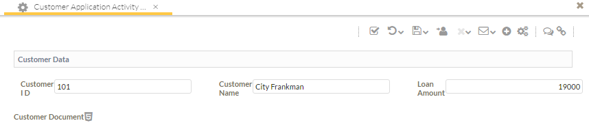

Pausing and Starting Processes
This tutorial describes how to pause the current process instance and start a new process instance.
Also, check whether the documents attached to the current process instance are copied in the new process instance.
In an organization, the loan application process instances are started but the approval is pending for these loan processes.
This resulted into incorrect workflow of the processes. Hence, the organization has requested an enhancement to the existing
functionality. For detail scenario, refer to the
Common Usage Pattern
section of the
Pausing and Starting a new Process
chapter of the
Concepts handbook.
For details on the pause and start functionality, refer to the
Pausing a Process and Starting a new Process chapter of the
End User Handbook.
This tutorial covers the following:
Importing the Example Model
The example model contains the following:
- Loan Application Process - This process contains three activities:
- Customer Application Activity
- Customer Application Review
- Approve Loan
- Approve Loan Application - This process contains two activities:
- Review Loan Application
- Finalize the Loan Amount
These activities have the structured data named Customer Data and the document data
named CustomerDocument associated with it.
Perform the following steps to download the example model named Loan Application.
Note that this example model is created in the Modeling perspective.
- Download the following ZIP file which contains the example model in the
folder
managing-unstructured-workflow:
all-tutorials.zip
Deploying and Running the Model
Perform the following steps to deploy the model and run
the project in the Stardust Portal:
- Make sure that the server is up and running
- Start the Stardust Portal as described in the chapter
Logging in the Stardust Portal of the End User
Handbook. Login as administrator (motu/motu). You can use the
Shift-F8 shortcut key.
- Switch to the Modeling perspective
- Import the Loan Application model in the Modeling perspective as
described in the section Importing a Model of the chapter
Model Operations of
the Business Process Modeling Handbook.
- Deploy the model in the Modeling perspective as
described in the section Deploying a Model of the chapter
Model Operations of
the Business Process Modeling Handbook.
Pausing and Starting the Activity and Process
Let's pause the Loan Application Process and start the Approve Loan Application process. After pausing, the Loan Application Process
and its activities would achieve the Halted state. Once the Approve Loan Application process is completed, the Loan Application Process would become
Active and the workflow would resume.
- Switch to the Workflow Execution perspective
- From the My Startable Processes panel, start the Loan Application Process
Figure: Loan Application Process
- Enter the loan details and upload a document to the Customer Application Activity

Figure: Customer Application Activity
- Complete the Customer Application Activity. The Customer Application Review activity
gets displayed along with the uploaded document in the new tab.
- Review and close the uploaded document tab
- In the toolbar, click the Suspend and Save icon to suspend the Customer Application Review activity
Figure: Customer Application Review - Suspend and Save
- Switch to the Administration perspective and open the Activity Overview view
Figure: Administration - Activity Overview
- Select the suspended Customer Application Review activity from the Activities view
- In the toolbar, click the down arrow displayed next to the Abort Menu icon and choose the Pause Process and Start option
Figure: Pause Process and Start - Customer Application Review
- In the Pause Process and Start dialog, select the Approve Loan Application from the
Select Process drop-down list and click Ok.
Figure: Pause Process and Start - Approve Loan Application
- Click No in the Information dialog
- In the Activity Overview table, note the status of the Customer Application Review activity is displayed as
Halted.
Figure: Customer Application Review - Halted
- Open the Process Overview table from the Workflow Administration panel and note
the status of the Loan Application Process is displayed as Halted.
Figure: Process Overview - Loan Application Process - Halted
- Switch to the Workflow Execution perspective
- Open the worklist from the My Assignments panel
Figure: Worklist - My Assignments
- Note the status of the Review Loan Application activity is displayed as Suspended
Figure: Review Loan Application - Suspended
- Activate the Review Loan Application activity
- Review and close the document copied to this activity
- In the toolbar, click the Complete icon to complete the Review Loan Application activity
Figure: Complete - Review Loan Application
- Similarly, complete Finalize the Loan Amount activity
Figure: Complete - Finalize the Loan Amount
- Switch to the Process Overview and note that the Loan Application Process
has achieved the status Active as soon as Finalize the Loan Amount activity is completed.
Figure: Process Overview - Loan Application Process - Active
- Switch to the Workflow Execution perspective and open the worklist
- Activate and complete the Customer Application Review activity
- Complete the Approve Loan activity
- Switch to the Process Overview and note the status of the
Loan Application Process and Approve Loan Application processes.
Figure: Processes - Completed
Viewing the Linking
In this case, the current process is
Loan Application Process and the newly started process is Approve Loan Application.
The link type would be displayed for these processes:
- In the Process Overview, click on the Loan Application Process
Figure: Process Overview - Loan Application Process
- Open the Linked Processes panel and note the Link Type
is displayed as Inserted
Figure: Link Type - Inserted
- In the Linked Processes panel, click on the Approve Loan Application process.
The process details of the Approve Loan Application process gets displayed.
- Open the Linked Processes panel and note the Link Type is displayed as Inserted Into

Figure: Link Type - Inserted Into
Viewing the Process History
Open the Process Details view of the Loan Application Process to view the process history.
Figure: Process History - Loan Application Process